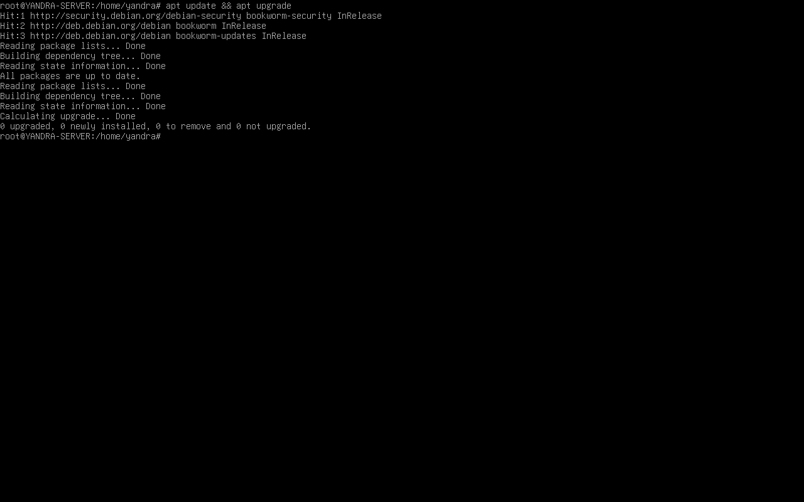
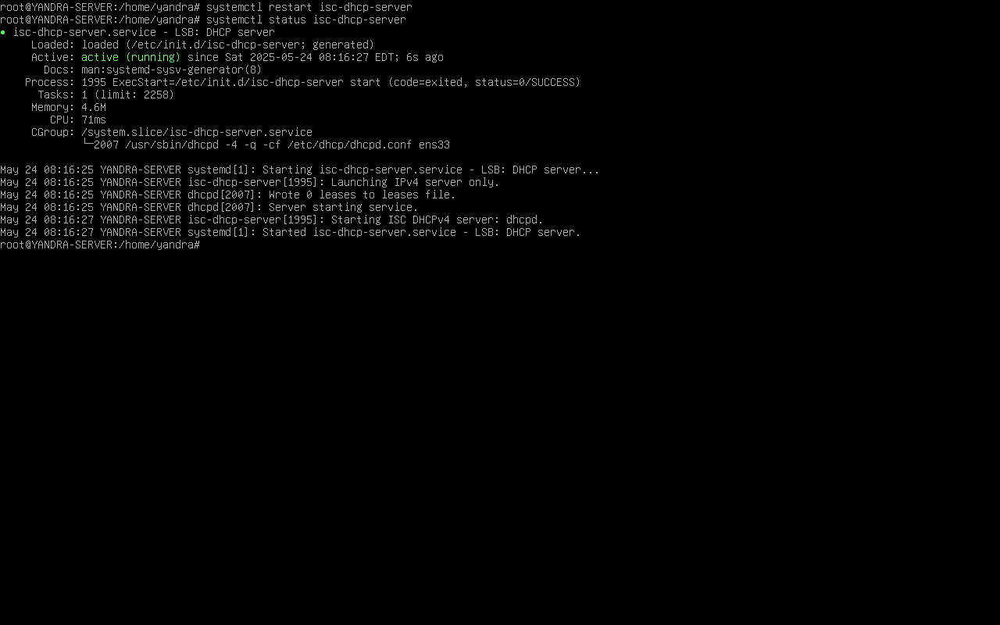
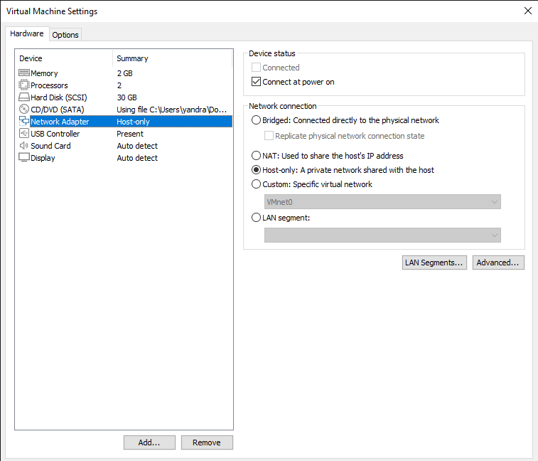

INSTALASI DHCP SERVER PADA VIRTUAL BOX
1. UPDATE & UPGRADE Package Server
1.1 Install package DHCP server
apt install isc-dhcp-server
1.2 Cek adapter server
Contoh adapter: ens33
1.3 Buat IP untuk server
nano /etc/network/interfaces
Isi file seperti berikut (contoh menggunakan IP kelas C 192.168.1.1):
auto ens33 iface ens33 inet static address 192.168.1.1/24
1.4 Cek apakah IP sudah berubah
systemctl restart networking ip a
1.5 Konfigurasi DHCP server
nano /etc/dhcp/dhcpd.conf
{
subnet 192.168.1.0 netmask 255.255.255.0 {
range 192.168.1.10 192.168.1.20;
option routers 192.168.1.1;
option subnet-mask 255.255.255.0;
option domain-name-servers 8.8.8.8, 8.8.4.4;
}
}
1.6 Konfigurasi adapter DHCP
nano /etc/default/isc-dhcp-server
INTERFACESv4="ens33" INTERFACESv6=""
1.7 Restart DHCP server
systemctl restart isc-dhcp-server systemctl status isc-dhcp-server
Status layanan harus RUNNING jika berhasil.
1.8 Ubah adapter VM
Ubah adapter menjadi Host Only Adapter
1.9 Pengecekan IP di Client
Gunakan Command Prompt:
ipconfig /release ipconfig /renew
Jika mendapat IP seperti 192.168.1.10, maka konfigurasi DHCP berhasil.